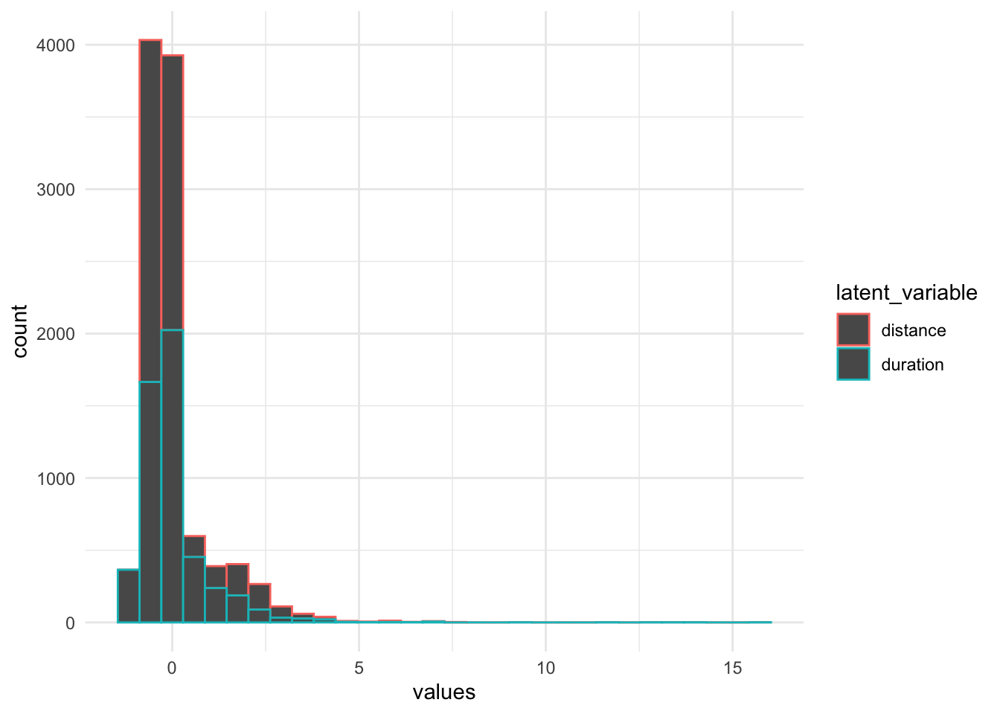

Chapter 6 Multivariate analysis and dimension reduction
6.1 Multivariate analysis
6.1.1 Advanced visualization
6.1.1.1 The grammar of graphics
The grammar of graphics was introduced in 2005 by Wilkinson and Leland as a general framework for graphical representation of data. It was adapted by Hadley Wickham in the R package ggplot2.
It presents a unique foundation for producing almost every quantitative graphic found in scientific journals, newspapers, statistical packages, and data visualization systems.
You can check the paper from Wickham
When ploting data, one has to define :
- What are the aesthetics \(\rightarrow\) the dimensions you want to represent
- What is the geometry you want to use \(\rightarrow\) the kind of plot you want
- Ploting options (that come with default values) :
- scales of the axis
- fonts and colors for text
- labels (title, axis titles…)
In short, what you have to find is the right combination of aesthetics and geometry that best represent the data. To find the recommended combination, don’t forget to use From data to viz
6.1.1.2 Playing with aesthetics
You must define at least 1 dimension for the plot, either continuous or categorical for the x axis. Then you can increase the number of dimensions (ie columns of the data frame) you want to represent :
- x and y for the axis
- size : optional (integer) dimension that will represent an additional number
- color/fill : optional (categorical) dimension reprensented by a color. Color is for line/point geoms, fill for bars/heatmap geoms
- linetype : optional (categorical) : different type of lines (solid, dotted, dashed…). Only for geometries using lines
- shape : optional (categorical) : variable that will make the shape of the dot vary. Only for point geometries
- alpha : optional (continuous) : the transparency of the dots (the lower the value, the more transparent the dot)
- …
More about the aesthetics here
You can also use the facet_wrap() or facet_grid() functions to add up to 2 more dimensions with categorical variables (see demo)
6.1.1.3 Geometries
Once you chose the variables (dimensions) you want to plot, you have to chose the geometry, that highly depends on the type of variable (numerical or character/factor). Don’t forget to reffer to the website from data to viz if you need some inspiration.
A short list of most common geometries :
- geom_bar for barplots
- geom_histogram for histograms
- geom_jitter for scatter plots
- geom_boxplot & geom_violin for compared density plots
- geom_tile for heatmaps
- geom_line for time series
- geom_text or geom_label for text (annotations)
- geom_hline and geom_vline for horizontal and vertiacal lines
- ……


# To
ggplot(dat_clean,aes(x=avgSpeed,y=calories,size=duration,color=qual_distance,shape=qual_avgHr)) +
geom_jitter() +
facet_wrap(.~ activity_recoded,scales = "free")+
theme_minimal()
# Or maybe
ggplot(dat_clean,aes(x=avgSpeed,y=elevationGain,size=calories,color=duration)) +
geom_jitter() +
facet_grid(activity_recoded~qual_distance,scales = "free" )+
theme_minimal()
6.1.1.4 Important options
With ggplot, one can make publishable graphics that don’t need to be modified in another software. For that, the most useful functions are :
- scale_xx_yy : functions that allow you to tweak the axis’ scale, the colors used by either
colororfillaesthetics (eg :scale_color_manual()) and other options. - labs : allows you to proper label title, axis’ titles, legend titles…
- theme : allows you to tweak general parameters for the plot (font family, font size, margins, background colors…). You have several
theme_xx()functions already defined with different default values for those parameters (egtheme_minimal()ortheme_void()) - guides : allows you to modify the legend entries
Whats you can also do is recode the levels of the factor variables to make them more understanble or reorder them if you want them to be displayed in a specific order. See forcats::fct_recode() and forcats::fct_reorder()
Hint : when working with strings, you can force a string to be split in 2 rows with \n
Here is an example :
dat_clean %>%
ggplot(aes(x=avgSpeed,y=elevationGain,size=calories,color=duration,size=distance)) +
geom_jitter() +
facet_grid(activity_recoded~qual_distance,scales = "free" ) +
theme_minimal() +
labs(title="Great insights",y="Total evelation",x="Average speed",
color="Duration",size="Total distance") +
# scale_color_manual(values = c("magenta","orange")) +
scale_size_continuous(labels=scales::comma) +
scale_y_continuous(labels=scales::comma) +
scale_x_continuous(labels=scales::comma)+
theme_minimal()6.1.1.5 Some tricks with ggplot
This approach (grammar of graphics) is very coherent but makes it sometimes difficult. For example, how can I represent the distribution of several variables (and not the distribution of one variable according to different sub-groups -meaning that there is a second dimension -) ?
6.1.1.5.1 The cheater way
You can brute-force the graph by superposing different geometries. But first, you’ll have to standardize the variables (they don’t have the same scale). Remember the usage to across to apply a function to a selection of variables.
mutate(dat_clean,across(where(is.numeric),
function(xx) (xx-mean(xx,na.rm=T))/sd(xx,na.rm=T))) %>%
ggplot() + geom_density(aes(distance),color="blue") +
geom_density(aes(duration),color="red")+
theme_minimal()
This solution can be also used if you want to superpose different geometries (bars and lines, bars and hlines,…), and is in this case legal :D
6.1.1.5.2 Do it with the tidy philosophy
You can reformulate this task as : I want to represent the distribution of one unique variable for 3 subgroups : age, churn and usage. I have to reshape the data first to create such a variable. For that I will use tidyr::pivot_longer() which helps me to transform columns into rows
reshaped <- select(dat_clean,duration,distance) %>%
pivot_longer(cols = everything(),names_to="latent_variable",values_to="values")
reshaped## # A tibble: 10,250 x 2
## latent_variable values
## <chr> <dbl>
## 1 duration 3640221.
## 2 distance 300000
## 3 duration 15064570.
## 4 distance 12293220.
## 5 duration 10382433.
## 6 distance 8360927.
## 7 duration 5393830.
## 8 distance 1792890.
## 9 duration 3626825.
## 10 distance 3492347.
## # … with 10,240 more rowsNow I can use the latent_variable variable as a dimension in a classic ggplot statement, with a prior standardization
group_by(reshaped,latent_variable) %>%
mutate(values=(values-mean(values,na.rm = T))/sd(values,na.rm = T)) %>%
ggplot(aes(values,color=latent_variable)) + geom_histogram()+
theme_minimal()
Or you can even skip the standardization step thanks to facets :
ggplot(reshaped,aes(values)) + geom_histogram() +
facet_wrap(.~latent_variable,scales = "free")+
theme_minimal()
6.1.1.5.3 Combine different plots with ggpubr
ggpubr makes your life much easier to make publication-ready graphics. It allows you for example to combine several ggplot graphics in a grid, regardless of any latent dimension that facet_grid would require. For that you have to store the graphics and “replay” them in a defined grid generated by ggarrange()
# install.packages("ggpubr")
require(ggpubr)
gg1 <- ggplot(dat_clean,aes(distance)) + geom_histogram() + labs(title = "Age distribution")+
theme_minimal()
gg2 <- ggplot(dat_clean,aes(x=avgSpeed,y=elevationGain,size=calories,color=duration,size=distance)) +
geom_jitter() +
facet_grid(activity_recoded~qual_distance,scales = "free" ) +
theme_minimal() + labs(title = "Beautiful but useless plot")+
theme_minimal()
ggarrange(gg1,gg2,ncol = 2,widths = c(1,2))
There are a lot of options in this function (common legend, height and width of each plot,…). You can check the full documentation of this package.
Note that you can mix tables and graphics with this function. Tables can be rendered as ggplot object with ggpubr::ggtexttable()
6.1.2 Easily explore an entire dataset
Now, you know how to to one graph including several dimensions. To explore a new dataset and identify the correlations between them, you can visualize at a glance all variables in a datasets and their correlations with GGally
6.1.2.1 Scatter plot matrix
The scatter plot matrix shows the correlations between all variables and helps you to spot dependencies between them. We can use either the basic plot() function on the dataframe or the GGally package which provides extensions to ggplot.
Side note : the ggpairs function does a lot of computation and can take a lot of time ! \(\rightarrow\) if your dataset is large, you should run it only on a sample of the observations with dplyr::sample_n() or dplyr::sample_frac().
select(dat_clean,distance,duration,avgHr,avgSpeed,avgPower,
calories,elevationGain,avgBikeCadence,activity_recoded) %>%
plot()
# install.packages("GGally")
require(GGally)
select(dat_clean,distance,duration,avgSpeed,
calories,activity_recoded) %>%
GGally::ggpairs()

6.2 Multivariate analysis and dimension reduction
In this section, we will focus on the bike activities, which have the highest number of metrics. However, before we can go further, we have to deal with missing data and scale them to avoid that the column with a large order of magnitude are over-weighted.
6.2.1 Imputation
So far, we have ignored the missing values because we were computing summary statistics on one or 2 variables. The problem when taking into account more columns is that the probability of having one missing value on one of these features is higher, and therefore the risk that the whole observation is ignored increases. Every observation should still contain some original information that an analysis (or a model) should reflect. To avoid to ignore to many observations because of missing data we perform imputation, meaning that we replace the missing value with a true value. Many methods can be used to that end :
For numeric variables
- Imputation with a random value from the sample
- Imputation with the mean/median
- Imputation with the nearest neighbours (k-nn)
- Hotdeck
- Imputation with a model (regression)
For categorical variables :
- Imputation with random category selection
- Imputation with the most frequent category (total or of the neighbours)
- Hotdeck
- Model-based imputation
The challenge here is to chose between “reflecting the instance’s originality” or “not creating noise”
The following code counts the number of missing values per column and does a simple mean or median imputation. We will practice hte imputation via regression in the final chapter’s exercises.
dat_bike <- filter(dat_clean,is_bike) # Bike activities
sapply(dat_bike,function(xx) sum(is.na(xx)))## activityId uuidMsb uuidLsb
## 0 932 932
## name activityType userProfileId
## 229 0 0
## timeZoneId beginTimestamp eventTypeId
## 0 0 0
## rule sportType startTimeGmt
## 0 1262 0
## startTimeLocal duration distance
## 0 0 1
## elevationGain elevationLoss avgSpeed
## 175 176 2
## maxSpeed avgHr maxHr
## 495 665 664
## calories startLongitude startLatitude
## 2 583 583
## aerobicTrainingEffect avgFractionalCadence maxFractionalCadence
## 1376 0 0
## elapsedDuration movingDuration anaerobicTrainingEffect
## 1189 1528 2021
## deviceId minTemperature maxTemperature
## 852 1000 1000
## minElevation maxElevation locationName
## 1018 1018 1781
## maxVerticalSpeed lapCount endLongitude
## 1708 1642 2186
## endLatitude activeSets totalSets
## 2186 1855 1855
## totalReps purposeful autoCalcCalories
## 1855 0 1246
## favorite pr elevationCorrected
## 0 0 871
## atpActivity parent maxRunCadence
## 1828 474 2491
## steps avgVerticalOscillation avgGroundContactTime
## 2491 2492 2492
## avgStrideLength vO2MaxValue avgVerticalRatio
## 2491 2289 2492
## avgGroundContactBalance avgDoubleCadence maxDoubleCadence
## 2492 2491 2491
## avgPower avgBikeCadence maxBikeCadence
## 1832 1188 1188
## strokes normPower avgLeftBalance
## 1197 1832 1896
## avgRightBalance max20MinPower trainingStressScore
## 1896 1838 1881
## intensityFactor lactateThresholdBpm lactateThresholdSpeed
## 1881 2492 2492
## avgStrokes activeLengths avgSwolf
## 2492 2311 2492
## poolLength avgStrokeDistance avgSwimCadence
## 2492 2492 2492
## maxSwimCadence maxFtp workoutId
## 2492 2435 2381
## decoDive parentId avgVerticalSpeed
## 2492 2479 2492
## maxDepth avgDepth surfaceInterval
## 2492 2492 2492
## floorsDescended bottomTime start_time
## 2492 2492 0
## date is_bike is_run
## 0 0 0
## activity_recoded qual_distance qual_avgHr
## 0 0 914For this use case, we will use a median imputation, because for some of the variables, the mean would not make sense (eg longitude and latitude).
dat_bike_imp <- mutate(dat_bike,across(where(is.numeric),
function(xx) ifelse(is.na(xx),mean(xx,na.rm=T),xx)))
sapply(dat_bike_imp,function(xx) sum(is.na(xx)))## activityId uuidMsb uuidLsb
## 0 932 932
## name activityType userProfileId
## 229 0 0
## timeZoneId beginTimestamp eventTypeId
## 0 0 0
## rule sportType startTimeGmt
## 0 1262 0
## startTimeLocal duration distance
## 0 0 0
## elevationGain elevationLoss avgSpeed
## 0 0 0
## maxSpeed avgHr maxHr
## 0 0 0
## calories startLongitude startLatitude
## 0 0 0
## aerobicTrainingEffect avgFractionalCadence maxFractionalCadence
## 0 0 0
## elapsedDuration movingDuration anaerobicTrainingEffect
## 0 0 0
## deviceId minTemperature maxTemperature
## 852 0 0
## minElevation maxElevation locationName
## 0 0 1781
## maxVerticalSpeed lapCount endLongitude
## 0 0 0
## endLatitude activeSets totalSets
## 0 0 0
## totalReps purposeful autoCalcCalories
## 0 0 1246
## favorite pr elevationCorrected
## 0 0 871
## atpActivity parent maxRunCadence
## 1828 474 0
## steps avgVerticalOscillation avgGroundContactTime
## 0 2492 2492
## avgStrideLength vO2MaxValue avgVerticalRatio
## 2491 0 2492
## avgGroundContactBalance avgDoubleCadence maxDoubleCadence
## 2492 0 0
## avgPower avgBikeCadence maxBikeCadence
## 0 0 0
## strokes normPower avgLeftBalance
## 0 0 0
## avgRightBalance max20MinPower trainingStressScore
## 0 0 0
## intensityFactor lactateThresholdBpm lactateThresholdSpeed
## 0 2492 2492
## avgStrokes activeLengths avgSwolf
## 2492 0 2492
## poolLength avgStrokeDistance avgSwimCadence
## 2492 2492 2492
## maxSwimCadence maxFtp workoutId
## 2492 0 2381
## decoDive parentId avgVerticalSpeed
## 2492 2479 2492
## maxDepth avgDepth surfaceInterval
## 2492 2492 2492
## floorsDescended bottomTime start_time
## 2492 2492 0
## date is_bike is_run
## 0 0 0
## activity_recoded qual_distance qual_avgHr
## 0 0 914Let’s do the same for categorical (maximum frequency), even though it is not mandatory for PCA.
most_freq_cat <- function(xx)
{
tab <- table(xx)
return(names(tab[which.max(tab)]))
}
dat_bike_imp <- mutate(dat_bike_imp,across(where(is.character),
function(xx) coalesce(xx,most_freq_cat(xx))))
sapply(dat_bike_imp,function(xx) sum(is.na(xx)))## activityId uuidMsb uuidLsb
## 0 0 0
## name activityType userProfileId
## 0 0 0
## timeZoneId beginTimestamp eventTypeId
## 0 0 0
## rule sportType startTimeGmt
## 0 0 0
## startTimeLocal duration distance
## 0 0 0
## elevationGain elevationLoss avgSpeed
## 0 0 0
## maxSpeed avgHr maxHr
## 0 0 0
## calories startLongitude startLatitude
## 0 0 0
## aerobicTrainingEffect avgFractionalCadence maxFractionalCadence
## 0 0 0
## elapsedDuration movingDuration anaerobicTrainingEffect
## 0 0 0
## deviceId minTemperature maxTemperature
## 0 0 0
## minElevation maxElevation locationName
## 0 0 0
## maxVerticalSpeed lapCount endLongitude
## 0 0 0
## endLatitude activeSets totalSets
## 0 0 0
## totalReps purposeful autoCalcCalories
## 0 0 1246
## favorite pr elevationCorrected
## 0 0 871
## atpActivity parent maxRunCadence
## 1828 474 0
## steps avgVerticalOscillation avgGroundContactTime
## 0 2492 2492
## avgStrideLength vO2MaxValue avgVerticalRatio
## 0 0 2492
## avgGroundContactBalance avgDoubleCadence maxDoubleCadence
## 2492 0 0
## avgPower avgBikeCadence maxBikeCadence
## 0 0 0
## strokes normPower avgLeftBalance
## 0 0 0
## avgRightBalance max20MinPower trainingStressScore
## 0 0 0
## intensityFactor lactateThresholdBpm lactateThresholdSpeed
## 0 2492 2492
## avgStrokes activeLengths avgSwolf
## 2492 0 2492
## poolLength avgStrokeDistance avgSwimCadence
## 2492 2492 2492
## maxSwimCadence maxFtp workoutId
## 2492 0 0
## decoDive parentId avgVerticalSpeed
## 2492 0 2492
## maxDepth avgDepth surfaceInterval
## 2492 2492 2492
## floorsDescended bottomTime start_time
## 2492 2492 0
## date is_bike is_run
## 0 0 0
## activity_recoded qual_distance qual_avgHr
## 0 0 0# replacements <- select(dat_bike_imp,activityId,where(is.character)) %>%
# pivot_longer(-activityId,names_to="name",values_to="val") %>%
# filter(!is.na(val)) %>%
# group_by(name,val) %>%
# summarise(cat_nb=n()) %>%
# arrange(name,-cat_nb) %>%
# group_by(name) %>%
# summarise(most_freq=first(val)) %>%
# pivot_wider(names_from = name,values_from=most_freq) %>%
# rename_with(function(xx) paste0(xx,"_imp"))6.2.2 Normalization
Normalization is the operation consisting in scaling the columns so that their unit do not matter in the end. For example, the distance in meter is much larger than the cadence or the power, which have totally different units. To normalize the columns and make them unit-less, there are several methods among which the most common are the following :
- Standardization : \(X_i^{std} = \dfrac{X_i-\bar{X}}{\sigma_X} \rightarrow\) mean 0 and standard deviation 1
- Min-Max scaling : \(X_i^{std} = \dfrac{X_i-min(X)}{max(X)-min(X)} \rightarrow\) between 0 and 1
- Robust standardization \(X_i^{std} = \dfrac{X_i-Q2(X)}{Q3(X)-Q1(X)} \rightarrow\) similar to the first option but robust to outliers
You can check scikit-learn documentation to see what other options you have (and then search for their R implementation).
Normalization is a mandatory step before fitting a model, in order to avoid that only one feature bears the majority of the variance and makes the model biased.
6.2.3 PCA
Principal Components Analysis (PCA) is often seen by machine learning engineers as a dimension reduction technique, but it is also a very powerful tool to explore your data (and it was designed for that purpose \(\rightarrow\) IQ test). PCA applies on numerical variables only and aims to create new synthetic and uncorrelated variables, princpipal components (as a linear combination of the original variables) such that the inertia (ie variance) is highly concentrated on a small number of variables.
The mathematical problem is to find eigenvalues and eigenvectors of the correlation matrix. The eigenvectors represent the linear combination of the original variables needed to design thos new variables, and the eigenvalues the variance that each of these new value bears. Once those new variable have been found, graphical representations with few dimensions are possible.
To apply PCA, we will use the FactoMineR package, very easy to use for multivariate analysis.
Notes :
- You can have supplementary continuous or categorical variables. They won’t be used in the construction of the eigenvectors, but you will be able to place them in the newly defined vector space.
- By default, almost all implementations of PCA standardizes the data, so you do not have to do it by yourself, but check in the documentation of the function you use
# install.packages("FactoMineR")
require(FactoMineR)
acp_dat <- select(dat_bike_imp,deviceId,duration,distance,elevationGain,elevationLoss,avgSpeed,avgHr,calories,
minTemperature,maxTemperature,lapCount,avgBikeCadence,avgPower,vO2MaxValue,
max20MinPower)
acp <- PCA(acp_dat,graph = F,quali.sup = c(1))What’s in this new object ?
## List of 6
## $ eig : num [1:14, 1:3] 4.71 2.03 1.65 1.31 1.26 ...
## ..- attr(*, "dimnames")=List of 2
## .. ..$ : chr [1:14] "comp 1" "comp 2" "comp 3" "comp 4" ...
## .. ..$ : chr [1:3] "eigenvalue" "percentage of variance" "cumulative percentage of variance"
## $ var :List of 4
## ..$ coord : num [1:14, 1:5] 0.802 0.906 0.475 0.487 0.661 ...
## .. ..- attr(*, "dimnames")=List of 2
## .. .. ..$ : chr [1:14] "duration" "distance" "elevationGain" "elevationLoss" ...
## .. .. ..$ : chr [1:5] "Dim.1" "Dim.2" "Dim.3" "Dim.4" ...
## ..$ cor : num [1:14, 1:5] 0.802 0.906 0.475 0.487 0.661 ...
## .. ..- attr(*, "dimnames")=List of 2
## .. .. ..$ : chr [1:14] "duration" "distance" "elevationGain" "elevationLoss" ...
## .. .. ..$ : chr [1:5] "Dim.1" "Dim.2" "Dim.3" "Dim.4" ...
## ..$ cos2 : num [1:14, 1:5] 0.644 0.821 0.225 0.237 0.437 ...
## .. ..- attr(*, "dimnames")=List of 2
## .. .. ..$ : chr [1:14] "duration" "distance" "elevationGain" "elevationLoss" ...
## .. .. ..$ : chr [1:5] "Dim.1" "Dim.2" "Dim.3" "Dim.4" ...
## ..$ contrib: num [1:14, 1:5] 13.67 17.43 4.78 5.03 9.28 ...
## .. ..- attr(*, "dimnames")=List of 2
## .. .. ..$ : chr [1:14] "duration" "distance" "elevationGain" "elevationLoss" ...
## .. .. ..$ : chr [1:5] "Dim.1" "Dim.2" "Dim.3" "Dim.4" ...
## $ ind :List of 4
## ..$ coord : num [1:2492, 1:5] 7.44 1.79 -1.3 3.28 3.48 ...
## .. ..- attr(*, "dimnames")=List of 2
## .. .. ..$ : chr [1:2492] "1" "2" "3" "4" ...
## .. .. ..$ : chr [1:5] "Dim.1" "Dim.2" "Dim.3" "Dim.4" ...
## ..$ cos2 : num [1:2492, 1:5] 0.6847 0.0898 0.139 0.396 0.4002 ...
## .. ..- attr(*, "dimnames")=List of 2
## .. .. ..$ : chr [1:2492] "1" "2" "3" "4" ...
## .. .. ..$ : chr [1:5] "Dim.1" "Dim.2" "Dim.3" "Dim.4" ...
## ..$ contrib: num [1:2492, 1:5] 0.4721 0.0274 0.0143 0.0916 0.1032 ...
## .. ..- attr(*, "dimnames")=List of 2
## .. .. ..$ : chr [1:2492] "1" "2" "3" "4" ...
## .. .. ..$ : chr [1:5] "Dim.1" "Dim.2" "Dim.3" "Dim.4" ...
## ..$ dist : Named num [1:2492] 9 5.99 3.48 5.21 5.5 ...
## .. ..- attr(*, "names")= chr [1:2492] "1" "2" "3" "4" ...
## $ svd :List of 3
## ..$ vs: num [1:14] 2.17 1.43 1.29 1.15 1.12 ...
## ..$ U : num [1:2492, 1:5] 3.43 0.826 -0.598 1.511 1.604 ...
## ..$ V : num [1:14, 1:5] 0.37 0.417 0.219 0.224 0.305 ...
## $ quali.sup:List of 5
## ..$ coord : num [1:9, 1:5] 0.797 -0.466 0.288 0.187 -0.311 ...
## .. ..- attr(*, "dimnames")=List of 2
## .. .. ..$ : chr [1:9] "3454054575" "3825981698" "3842681113" "3858417560" ...
## .. .. ..$ : chr [1:5] "Dim.1" "Dim.2" "Dim.3" "Dim.4" ...
## ..$ cos2 : num [1:9, 1:5] 0.2472 0.0613 0.0381 0.0196 0.1877 ...
## .. ..- attr(*, "dimnames")=List of 2
## .. .. ..$ : chr [1:9] "3454054575" "3825981698" "3842681113" "3858417560" ...
## .. .. ..$ : chr [1:5] "Dim.1" "Dim.2" "Dim.3" "Dim.4" ...
## ..$ v.test: num [1:9, 1:5] 0.52 -1.517 0.265 0.15 -1.386 ...
## .. ..- attr(*, "dimnames")=List of 2
## .. .. ..$ : chr [1:9] "3454054575" "3825981698" "3842681113" "3858417560" ...
## .. .. ..$ : chr [1:5] "Dim.1" "Dim.2" "Dim.3" "Dim.4" ...
## ..$ dist : Named num [1:9] 1.604 1.882 1.475 1.338 0.719 ...
## .. ..- attr(*, "names")= chr [1:9] "3454054575" "3825981698" "3842681113" "3858417560" ...
## ..$ eta2 : num [1, 1:5] 0.148 0.0795 0.0733 0.1403 0.044
## .. ..- attr(*, "dimnames")=List of 2
## .. .. ..$ : chr "deviceId"
## .. .. ..$ : chr [1:5] "Dim.1" "Dim.2" "Dim.3" "Dim.4" ...
## $ call :List of 10
## ..$ row.w : num [1:2492] 0.000401 0.000401 0.000401 0.000401 0.000401 ...
## ..$ col.w : num [1:14] 1 1 1 1 1 1 1 1 1 1 ...
## ..$ scale.unit: logi TRUE
## ..$ ncp : num 5
## ..$ centre : num [1:14] 4.67e+06 2.98e+06 3.87e+04 3.76e+04 5.58e-01 ...
## ..$ ecart.type: num [1:14] 3.54e+06 3.50e+06 1.14e+05 1.12e+05 3.30e-01 ...
## ..$ X :'data.frame': 2492 obs. of 15 variables:
## .. ..$ deviceId : Factor w/ 9 levels "3454054575","3825981698",..: 9 9 2 9 9 9 9 2 2 9 ...
## .. ..$ duration : num [1:2492] 15064570 10382433 3626825 8509404 8428058 ...
## .. ..$ distance : num [1:2492] 12293220 8360927 3492347 7991330 7420050 ...
## .. ..$ elevationGain : num [1:2492] 200100 74500 16000 61900 111700 ...
## .. ..$ elevationLoss : num [1:2492] 196800 74200 0 61100 111400 ...
## .. ..$ avgSpeed : num [1:2492] 0.816 0.805 0.963 0.939 0.88 ...
## .. ..$ avgHr : num [1:2492] 144 117 138 140 140 126 138 128 120 151 ...
## .. ..$ calories : num [1:2492] 16345 8745 3084 9327 9126 ...
## .. ..$ minTemperature: num [1:2492] 19 18 18.3 21 22 ...
## .. ..$ maxTemperature: num [1:2492] 29 29 26.2 30 32 ...
## .. ..$ lapCount : num [1:2492] 25 17 1 16 15 19 17 1 1 36 ...
## .. ..$ avgBikeCadence: num [1:2492] 83 82 91 88 87 82 86 87 86 88 ...
## .. ..$ avgPower : num [1:2492] 260 202 212 263 259 210 263 213 197 240 ...
## .. ..$ vO2MaxValue : num [1:2492] 72 71 64 71 71 ...
## .. ..$ max20MinPower : num [1:2492] 375 243 221 287 311 ...
## ..$ row.w.init: num [1:2492] 1 1 1 1 1 1 1 1 1 1 ...
## ..$ call : language PCA(X = acp_dat, quali.sup = c(1), graph = F)
## ..$ quali.sup :List of 5
## .. ..$ quali.sup :'data.frame': 2492 obs. of 1 variable:
## .. .. ..$ deviceId: Factor w/ 9 levels "3454054575","3825981698",..: 9 9 2 9 9 9 9 2 2 9 ...
## .. ..$ modalite : int 9
## .. ..$ nombre : num [1:9] 2 49 4 3 90 ...
## .. ..$ barycentre:'data.frame': 9 obs. of 14 variables:
## .. .. ..$ duration : num [1:9] 5815565 3745269 4374888 6604228 3170817 ...
## .. .. ..$ distance : num [1:9] 4241698 3402440 3889997 3052773 2049856 ...
## .. .. ..$ elevationGain : num [1:9] 41595 36724 28707 49032 41914 ...
## .. .. ..$ elevationLoss : num [1:9] 41333 0 30194 46806 41646 ...
## .. .. ..$ avgSpeed : num [1:9] 0.701 0.904 0.812 0.264 0.622 ...
## .. .. ..$ avgHr : num [1:9] 145 132 125 134 127 ...
## .. .. ..$ calories : num [1:9] 7924 3533 2740 4260 3524 ...
## .. .. ..$ minTemperature: num [1:9] 18.3 18.3 18.3 18.3 18.3 ...
## .. .. ..$ maxTemperature: num [1:9] 26.2 26.2 26.2 26.2 26.2 ...
## .. .. ..$ lapCount : num [1:9] 10.15 1.29 10.15 10.15 10.15 ...
## .. .. ..$ avgBikeCadence: num [1:9] 95.5 90.8 84.1 85.3 91.1 ...
## .. .. ..$ avgPower : num [1:9] 241 228 241 241 241 ...
## .. .. ..$ vO2MaxValue : num [1:9] 64 64 64 64 64 ...
## .. .. ..$ max20MinPower : num [1:9] 272 259 272 272 272 ...
## .. ..$ numero : num 1
## - attr(*, "class")= chr [1:2] "PCA" "list "This is a list with several elements :
eigcontains the eigenvalues, and their share in the total inertia (PCA is performed by default on scaled variables \(\rightarrow\) the trace of the diagonal matrix equals to the number of columns)indandvarrefer to rows and columns. They both have the same elements : “coord” for the coordinate on each principal component, “contr” the contribution to the inertia of this row (resp column) to the inertia of the component, “cos2” the squared cosine (ie quality of projection) for the row/columnquali.suphave the same elements than the previous ones (coordinates are the barycenter of each category of the qualitative variable)
The first thing is to have a look at the eignevalues to see how well the PCA could summarize the information


In our case, the first component bears 35% of the total inertia and the second 15%. Hence, the first factorial plane (the first 2 components) : let’s look at how the variable correlate with them :
What you can read at once on this plot is how important each variable is to construct the new variables. As a matter of fact, contribution, cos2 and coordinates are almost the same in PCA, meaning that the closer to the unit disc the coordinate is, the high are also contribution and quality of representation.
What we deduct from this graph :
- Distance, calories and duration have the largest values on the first component \(\rightarrow\) they contribute largely to the first component, which bears the 35% of total variance \(\rightarrow\) those variables are the most discriminant
- Those three variables are very close to each other, which means they are highly correlated
- The average cadence is on the other side of the first component \(\righarrow\) it is negatively correlated with those variables
- There is a right angle between elevationGain and avgPower \(\rightarrow\) the correlation is very small
Let’s check the correlation matrix to be sure about what we are reading here

How about the individuals ?

This graph is harder to read, but we still can identify outliers and understand wht they are. Anyway in the top-right corner, those are long rides with a lot of ups and downs ! The most extreme is 380343030 which is another measurement error (indoor cycling with 34000 elevation meters !)
6.2.4 Exercises
- Remove the measurement errors and re-run the PCA ; what are the changes ?
- Let’s focus the running activities : select relevant features, impute the missing values using k-nn, run a PCA and analyze the results
6.3 Dimension reduction
Dimension reduction aims to reduce the size of the data ; most of the time the goal is to decrease the number of columns but it can also apply to rows (depending on your use case). Why reduce the dimension :
- Avoid the curse of dimensionality
- Remove undesired noise
- Avoid multicollinearity in the features
6.3.1 Use the results of the PCA
After performing a PCA, you can select a limited number of principal components that you will use further in the modeling task. You can chose the number of components to keep with several criteria :
- average inertia (eigenvalue > 1)
- minimal total inertia (eg 80%)
- elbow criteria : keep components before there is a “drop” in the eigenvalues barplot
6.3.2 Other inertia-based methods
PCA is designed only for continuous variables, but you can use other methods for other types of data :
- MCA (Multiple Correspondence Analysis ) for categorical variables (if you have a mixture of continuous and categorical, you can discretize numerical variables and perform MCA)
- FDA (Functional Data Analysis for functions/curves)
6.3.3 t-SNE
t-SNE ahs a completely different approach to dimension reduction : it does not aim to preserve the total variance but rather the distances between the observations.
6.3.4 A word about clustering
6.4 Visualization bonus : dashboards and reports
6.4.1 Shiny and rmarkdown
R offers 2 main packages that allow you to create dashboards and reports in HTML format and the latest feature of web technologies without knowing anything about HTML, CSS or other web-specific languages :
- Rmarkdown is markdown adapted to R, allows you to create standalone documents in either PDF or HTML format, and mixes regular word-processor features and R code. The flexdashboard package is an extension to Rmarkdown that helps to generate dashboards in HTML format. Those tools are essentially used to design reproducible documents (scientific reports, regularly updated reports/dashboards…). You can also create presentation with it.
- Shiny is a package to develop interactive web-apps. A shiny app requires an R engine to be rendered on the client side.
In the course material, you’ll find one example for each package. You’ll easily find online material to develop your skills further with these tools
6.4.2 Web-based graphics with plotly
plotly is a graphical library that generate “interactive” web-based graphics. It is available for R, but also python and other programming languages. You can learn the syntax of this package too, but there is a very useful function, plotly::ggplotly() that translates your ggplot object into a plotly graphic. It works for most of the cases.
This is very useful to embed in a rmarkdown document or a shiny app !
6.4.3 Other packages & widgets
You can use a lot of other html widgets to incorporate in your report/shiny app